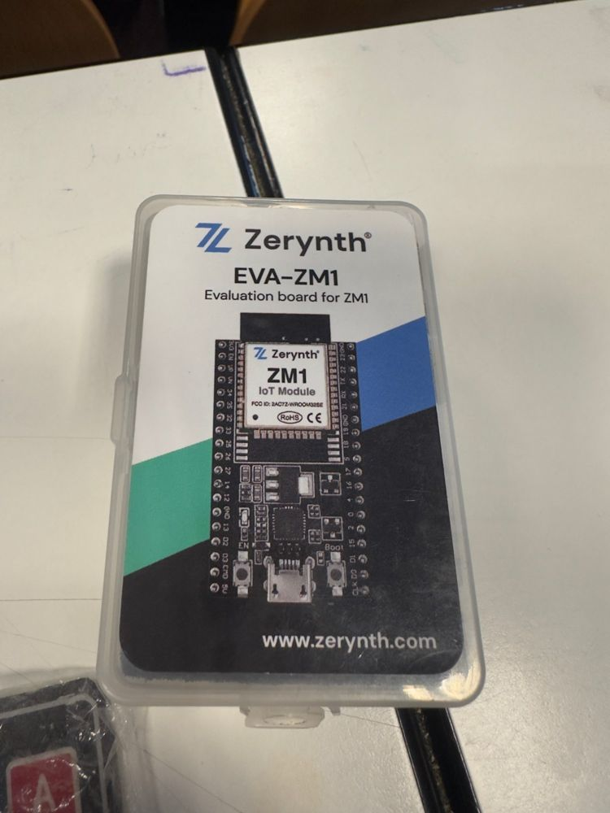

Zerynth EVA-ZM1
modulo ZM1 · ESP32-WROOM-32SEWi-FiUSB micrologica 3,3 V
- Funzione
- Legge tutti i sensori, muove servo e stepper, gestisce PIN e allarmi, serve l'interfaccia web e manda i dati in rete.
- Nel modello
- Vano elettronica, sulla breadboard fissata alla paratia. La porta USB serve per programmarla.